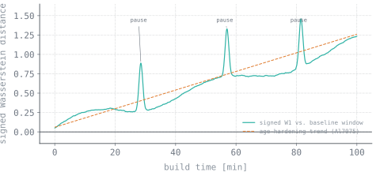

The problem
Additive Friction Stir Deposition (AFSD) builds parts by forcing solid metal feedstock through a rotating tool that plasticizes and deposits the material in the solid state — avoiding melting and the associated solidification defects, producing wrought-like properties.
However, the tool head physically occludes the deposition zone. Thermal cameras, laser probes, and other optical instruments observe the tool surface rather than the deposited material.
Can you detect defects and material property change using nothing but the machine's own telemetry?
Why it was hard
The telemetry — spindle speed, torque, traverse speed, normal force — is noisy, non-stationary, and coupled. Torque drifts with temperature. Force responds to controller dynamics as well as material state. Simple threshold-based alarms produce either excessive false positives or insufficient sensitivity.
Labeled defect data is extremely limited. Intentionally producing defective builds to populate a training set is impractical.
The approach
The monitoring metric is based on the signed Wasserstein distance.
The Wasserstein (earth mover's) distance quantifies the cost of transforming one probability distribution into another. It is sensitive to both distribution shape and location, not only mean shifts, and degrades gracefully under noise.
The signed variant preserves directionality. A positive shift in the torque distribution indicates increased flow stress — a physically interpretable signal that can inform process decisions.
- Extract raw time-series telemetry from the AFSD machine — spindle speed, torque, traverse speed, normal force.
- Establish a baseline distribution from a known-good window early in the build.
- Roll a window forward and compute the signed Wasserstein distance against baseline, per channel.
- Track the resulting dissimilarity curve across the build and flag both trends and discrete excursions.
All Python. NumPy and SciPy do the arithmetic; the engineering is in the windowing, normalization, and channel selection.

Technical stack
Engineering challenges
Baseline window selection
All measurements are relative to the baseline distribution. Including start-up transients biases the reference; too short a window captures noise rather than steady-state behavior.
Non-stationarity vs. anomalies
The process exhibits legitimate thermal drift during a build. Distinguishing expected drift from genuine anomalies is essential for maintaining a useful signal-to-noise ratio.
Window length trade-offs
Short windows resolve discrete events but miss gradual trends. Long windows capture trends but attenuate transients. The final implementation uses multiple timescales to address both.
Interpretability
The metric must be physically interpretable by process engineers to be actionable in a production context.
Results
The metric picked up two distinct classes of event.
- Metallurgical change detection. During Al7075 deposition, precipitation-driven age hardening progressively increases flow stress. The dissimilarity curve tracked this trend across the build, detecting a material property change from machine telemetry alone.
- Process interruption detection. Each deposition pause produced a distinct, unambiguous spike in the dissimilarity metric.
- Published in Journal of Manufacturing Processes as a dissimilarity index for AFSD process monitoring.
These results demonstrate that AFSD material state and process health can be monitored without optical line of sight to the deposition zone.
What I learned
The diagnostic signal existed in existing telemetry channels. The limiting factor was the statistical framework applied to the data, not sensor availability.
Metric interpretability is as important as statistical performance. A monitoring method must be understandable to process engineers to be adopted in practice.